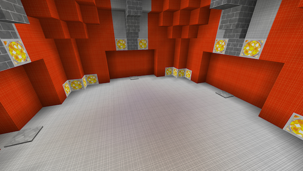
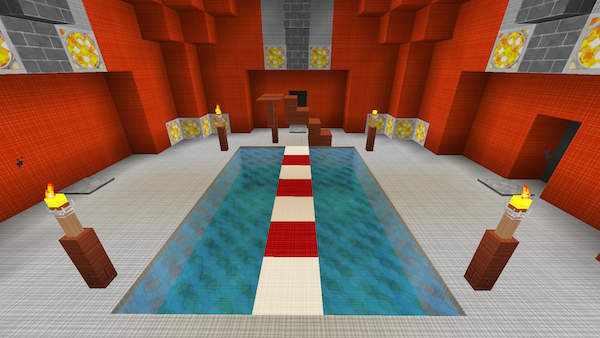
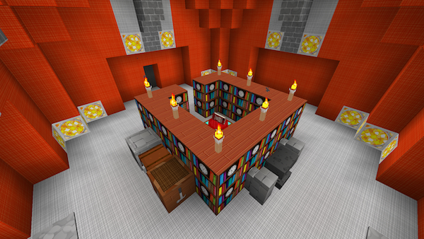

TARDIS
A Bukkit plugin for all Doctor Who fans — create and use a TARDIS! It’s bigger on the inside!
Room gallery
Arboretum

Bedroom

Empty

Exterior Rendering Room (Before render)

Exterior Rendering Room (Example render)
Eye of Harmony

Farm

Gravity well

Anti-Gravity well

Greenhouse

Horse Stable

Kitchen

Library

Mushroom

Passage

Pool

Rail Transport Room
Secondary console (Baker)

Secondary console (Wood)

Trenzalore

Vault

Village
Workshop

Deprecated Rooms
Cross roads
Depricated in TARDIS version 2.6-beta-1

Passage (old)
Depricated in TARDIS version 2.6-beta-1

Passage (long)
Depricated in TARDIS version 2.6-beta-1